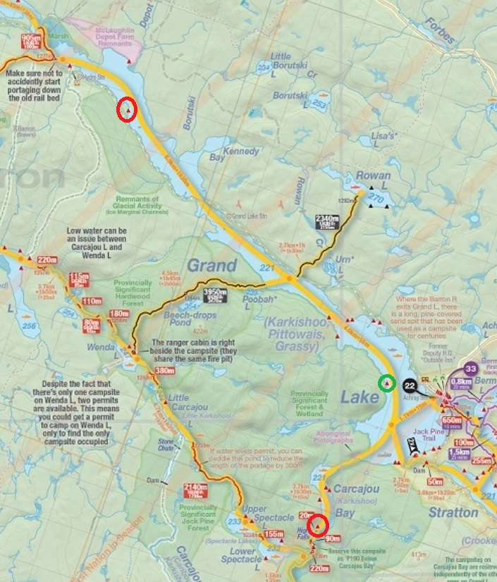

Day 1: Achray-Carcajou Bay
Day 2: Carcajou Bay-Grand Lake (Upper Portion)
Day 3: Grand Lake (Upper Portion)-Achray
Campsites circled in red, lunch stop circled in green.
~27km paddled.


 |
2020 Oct 1-3 - Grand Lake (Achray) from Access Point 22 Day 1: Achray-Carcajou Bay Day 2: Carcajou Bay-Grand Lake (Upper Portion) Day 3: Grand Lake (Upper Portion)-Achray Campsites circled in red, lunch stop circled in green. ~27km paddled. |
|
Jumpy the canoe on top of the Mazda at the Achray road access point. The mud pattern on the side of the car is quite nice. |
|
I usually try to get a photo right before I launch. There was a bit of wind and rain on this one, a great way to set out on your first solo paddling trip. |
|
Some good waves on Grand Lake on the first day, for a bit there was some white caps, but not the worst and I stayed close to shore for safety. The wind was a bit of a challenge while trying to paddle into the mouth of Carcajou Bay however since it kind of narrows and funnels in the area, but most of my issue was poor weight distribution within the canoe, a good learning lesson. |
|
Weather cleared up later in the day on Day 1, quite a nice view from the campsite into Carcajou bay. This site is at the end of the bay, right before the portage. |
|
View from the firepit, warming up after a cool and windy day of paddling. Started late in the day so a short paddle to start. |
|
View of the abandoned rail line bridge midway up the lake, the lake narrows quite a bit to go under the bridge. |
|
View from the bridge looking back towards Achray. Some nice slightly past peak colours. |
|
Site on Upper Grand Lake, quite a nice open site with a great view down the lake back towards the bridge. That night there was a ton of ducks flying in and quacking on the lake after sundown, it was really loud. |
|
Early sunrise on Day 3 from the site. |
|
Sun has come up on day 3 right before launch, the lake was like glass and it was quite a nice paddle back to Achray. |
|
View from the canoe heading home |
|
Approaching the train bridge from the upper portion of the lake. All the riprap on the right artificially narrowed the lake at this point to accomodate the rail line. |
|
The rare selfie, touque was necessary as it was a bit cold out on the lake this morning, a nice red going on in the beard as well. Always wear the PFD. |